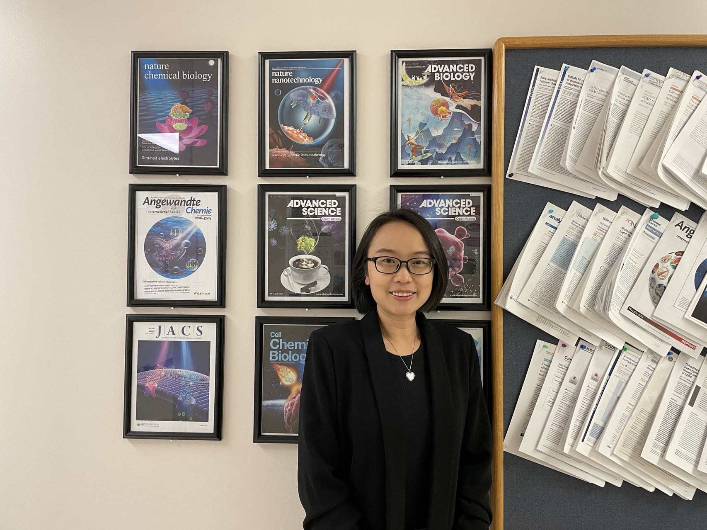

He, Lian (何涟)
|  | Assistant Professor Department of Pharmacology, School of Medicine, Southern University of Science and Technology, Shenzhen, China E-mail: hel3@sustech.edu.cn |
About
He lab based in SUSTech is interested in integrating multi-omics and optogenetics to study tissue biology and develop cancer immunotherapies.
Education
Ph.D., Texas A&M University, Texas A&M University, 2018-05
Dissertation Title: Engineered CRAC channel for optical control of calcium signaling.
Awards: Chinese Government Award for Outstanding Self-financed Students Abroad, Robert and Anabel Bruce Travel Award, Pre-doctoral Research Fellowship (The Welch Foundation)
M.S., Molecular Biology and Molecular Evolution, Sun Yat-sen University Sun Yat-sen University, 2011-06
Dissertation Title: Efficient and specific inhibition of plant microRNA function by anti-microRNA oligonucleotides (AMOs) in vitro and in vivo.
B.S., Biotechnology, Sun Yat-sen University Sun Yat-sen University, 2008-06
Research Area
Optogenetic Immunomodulation (Physiological Reviews 2022)
Tumor Microenvironment (Trends in Biotech 2017; PLoS Biology 2020; JCI 2020)
Optical and Spatial Transcriptomics
Protein Engineering and Biologics
Research Interest
Optogenetic Immunomodulation (Physiological Reviews 2022)
Tumor Microenvironment (Trends in Biotech 2017; PLoS Biology 2020; JCI 2020)
Optical and Spatial Transcriptomics
Protein Engineering and Biologics
 |
Study the tumor niches that drive the cancer metastasis
Develop all-optical pooled CRISPR and drug screens
Nanobody-based Immunotherapy
Featured Articles
Tan P*, Hong T, Cai X, Li W, Huang Y, He L*, Zhou Y*. Optical control of protein delivery and partitioning in the nucleolus. Nucleic Acids Research, 2022.
Tan P#, He L#, Huang Y, Zhou Y. Optophysiology: illuminating cell physiology with optogenetics. Physiological Reviews, 2022.
He L#, Huang Z#, Huang K#, Chen R, Nguyen N, Wang R, Cai X, Huang Z, Han G, Zhou Y and Jing J. Optogenetic control of non-apoptotic cell death. Advanced Science, 2021.
He L#, Tan P#, Zhu L#, Huang K#, Nguyen N, Wang R, Guo L, Li L, Yang Y, Huang Z, Huang Y, Han G, Wang J and Zhou Y. Circularly permuted LOV2 as a modular photoswitch for optogenetic engineering. Nature Chemical Biology, 2021.
He L*, Tan P, Huang Y*, Zhou Y*. Design of smart antibody mimetics with photosensitive switches. Advanced Biology, 2021.
He L#, Wang L#, Zeng H#, Tan P, Ma G, Zheng S, Li Y, Sun L, Dou F, Huang Y, Wang Y, and Zhou Y. Engineering of a bona fide light-operated calcium channel. Nature Communications, 2021.
Wang T#, He L#, Jing J, Lan TH, Hong T, Wang F, Huang Y, Ma G, and Zhou Y. Caffeine-operated synthetic modules for chemogenetic control of protein activities by life style. Advanced Science, 2021.
Tan P, He L, Xing C, Mao J, Yu X, Zhu M, Diao L, Han L, Zhou Y, You J, Wang Y, Wang R-F. Myeloid loss of Beclin 1 promotes PD-L1 hi precursor B cell lymphoma development. Journal of Clinical Investigation, 2020.
Tan P, Ye Y, He L, Xie J, Jing J, Ma G, Pan H, Han L, Han W, Zhou Y. TRIM59 promotes breast cancer motility by suppressing p62-selective autophagic degradation of PDCD10. PLoS Biology, 2018.
Tan P, He L, Huang Y, Zhou Y. Optogenetic immunomodulation: shedding light on antitumor immunity. Trends in Biotechnology, 2017.
He L#, Jing J#, Zhu L#, Tan P, Ma G, Zhang Q, Nguyen N, Wang J, Zhou Y, Huang Y. Optical control of membrane tethering and interorganellar communication at nanoscales. Chemical Science, 2017.
He L#, Zhang Y#, Ma G#, Tan P#, Li Z, Zang S, Wu X, Jing J, Fang S, Zhou L, Wang Y, Huang Y, Hogan PG, Han G, and Zhou Y. Near-infrared photoactivatable control of Ca2+ signaling and optogenetic immunomodulation. eLife, 2015.
Jing J#, He L#, Sun A, Quintana A, Ding Y, Ma G, Tan P, Liang X, Zheng X, Chen L, Shi X, Zhang SL, Zhong L, Huang Y, Dong MQ, Walker CL, Hogan PG, Wang Y, and Zhou Y. Proteomic mapping of ER–PM junctions identifies STIMATE as a regulator of Ca2+ influx. Nature Cell Biology, 2015.
Note# denotes co-first authors; * denotes corresponding authors.
Full list of publications in Google Scholar.
We are hiring researchers at different levels.